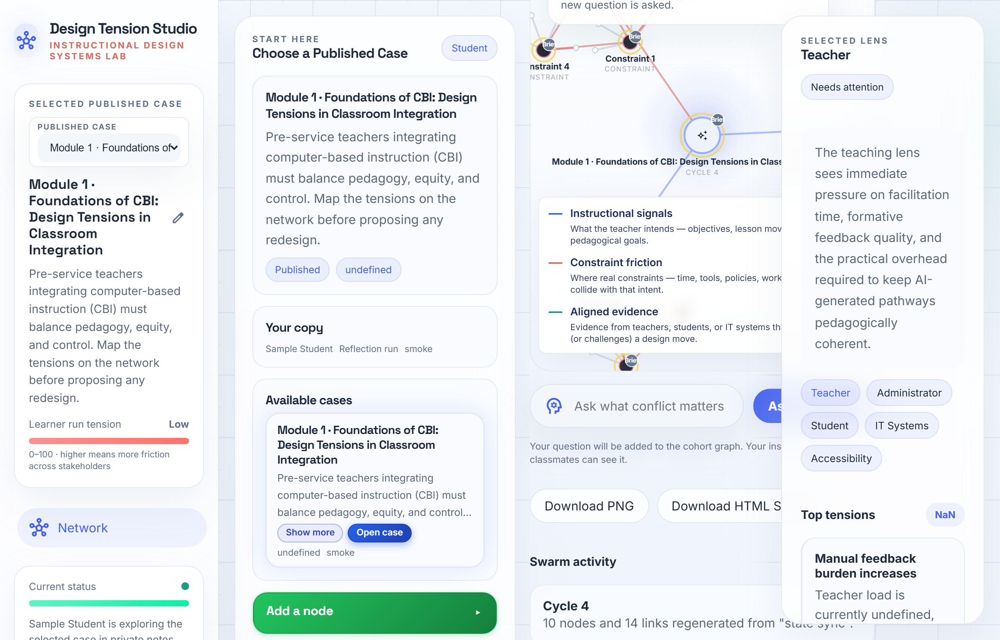
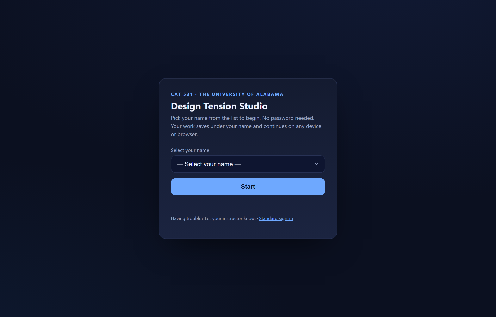
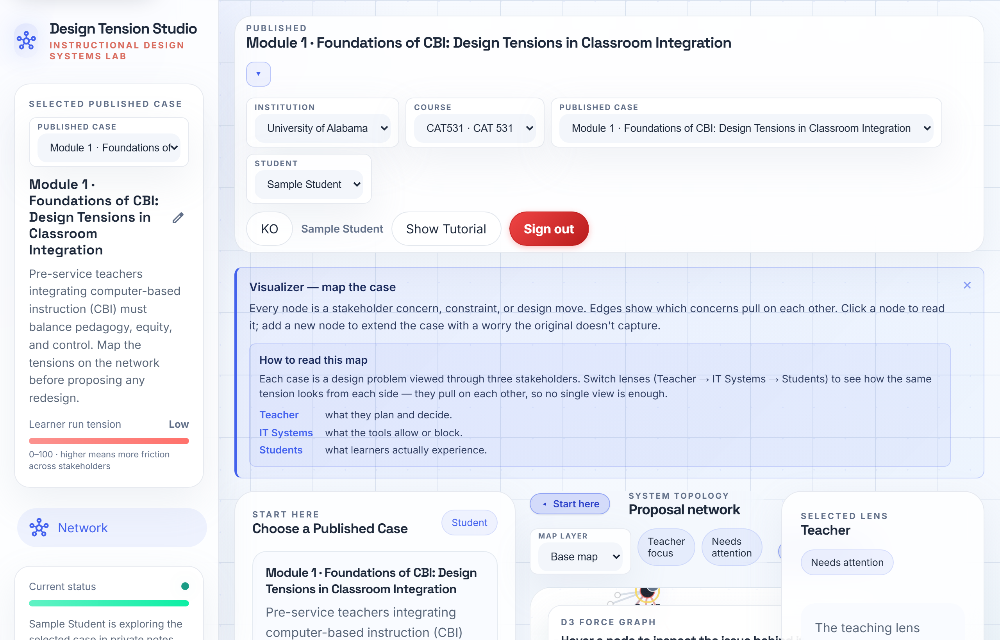
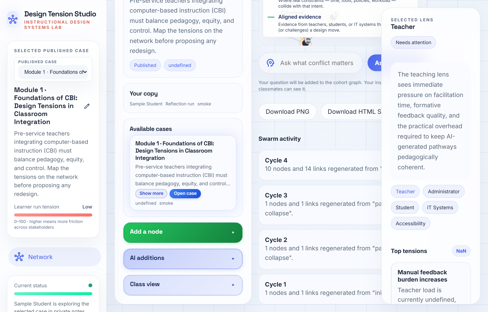

The 60-second version
- Go to the Studio link, pick your name from the dropdown, click Start. No password.
- Open the published Module 1 case and read its brief. The classroom scenario is already written for you.
- Switch the lenses (Teacher → IT → Students → Administration) to see the same situation from each side.
- Add a node for any design tension the case misses, and use the Save note box to annotate a node you've selected.
- Decide which tension matters most and write your rationale. That carries into the Module 1 Assess assignment.
You do not write a paragraph describing a classroom, and you do not make one up. The classroom is the case that's already published in the Studio. Your job is to explore it and reason about it, not to invent it. More below →
Watch the walkthrough
Under a minute, captioned, no sound needed. It shows the whole flow: logging in, opening the case, switching lenses, and adding a node.
What the Design Tension Studio is
Design Tension Studio (DTS) is the interactive tool we use for the Module 1 Explore activity. It shows an instructional-design situation as a network map: a real-world case sits in the center, surrounded by the concerns of the people affected by it (teachers, students, IT, administration).
Instead of reading a flat case study, you explore it from multiple sides, spot the design tensions (places where two good goals pull against each other), add your own thinking to the map, and build a defensible rationale. It's practice for exactly the kind of trade-off reasoning that good instructional designers do every day.
For CAT 531, your screen is intentionally focused on one view: the Case Network. You won't see extra panels (Perspectives, Trade-offs, Test Changes, Report). That's by design, so you can concentrate on mapping and reasoning. Nothing is missing or broken.

Step 1 · Log in (no password)
- Open the Studio: the CAT 531 link (also posted in Blackboard).
- From the "Select your name" dropdown, choose your own name.
- Click Start. You're in. There is no password to remember.

Your name is tied to your own saved space. You can log in from any device or browser (laptop, lab computer, phone) by picking your name again, and your previous work will be there. You don't type the course join code anywhere; that happens automatically.
That just means your account isn't set up on the roster yet. Email me (Mr. Moon) and I'll fix it the same day. It's not something you did wrong.
Step 2 · Open the published case
After you log in, you'll see a short "First steps" panel and a list of available cases. Click the Module 1 case to open it. A guided walkthrough is built in: click Show Tutorial at the top (or Take the guided tour in the First steps panel) and the tool will walk you through the screen.
Once the case is open, the network map fills the canvas: the case in the middle, stakeholder concern clusters arranged around it. A "How to read this map" panel explains what nodes and edges mean.

Step 3 · Read the brief — the case is already written for you
At the top of the open case is the brief. Read it first. This is the scenario you'll be working with for the whole activity:
"Where do I write the paragraph describing the classroom? Am I making it up from my own experience?"
Neither. There is no step where you describe or invent a classroom. The classroom situation is the case above, and it's the same for everyone. You don't author the context; you read it, explore it, and respond to it. Your original contribution is the tensions you identify and the rationale you write, not a fictional classroom.
You don't frame it; it's already framed in the brief you just read. The only things you'll click to add your own content are Add a node and Save note, covered in Steps 5 and 6.
Step 4 · Switch lenses
The same case looks different depending on who you ask. In the Selected lens panel on the right, click each lens chip to re-read the network from that stakeholder's side:
- Teacher — pedagogy, pacing, professional judgment
- Administrator — adoption pressure, accountability, cost
- Student — access, equity, experience
- IT Systems — infrastructure, data, devices, connectivity
- Accessibility — captioning, assistive needs, who gets left out
Spend a minute in each lens before you start adding anything. The tensions usually become obvious once you notice that what helps one stakeholder strains another. The panel also surfaces the Top tensions it currently sees.
Step 5 · Add a node
When you spot a design tension the case doesn't already capture, add it to the map:
- Use the Add a node control on the canvas.
- Give it a short, specific title (for example, "CBI pacing overrides reteaching").
- Save it. Your node joins the network and is stored under your name.
Aim for tensions across pedagogy, equity, and control, the three areas the activity focuses on. See the tension axes for prompts if you get stuck.

Step 6 · Save a note (annotate)
To add your thinking to a node, click the node to select it, then use the note box on the side. You'll see the prompt "Add a note to the selected node...". Type your comment or question and click Save note.
You can mark a note as a question or a comment. Use questions for things you're genuinely unsure about; they're useful evidence of your reasoning, not a sign you're behind.
Step 7 · Write your rationale
This is the heart of the assignment. After mapping the tensions, decide which single tension matters most for this school's CBI rollout, and explain why. Ground your reasoning in the case and the Module 1 readings, not just personal preference.
This Explore activity bridges directly into Module 1 Assess — Design Tension Rationale. The tensions you mapped and the reasoning you developed here are what you'll formalize there. Doing thoughtful work in the Studio makes the Assess submission much easier.
Reference · The five tension axes
These are the friction points built into the case. Use them as thinking prompts when adding nodes:
- Pedagogy vs. automation — CBI pacing can override a teacher's judgment about when to slow down or reteach.
- Equity vs. standardization — a uniform tool can widen gaps for learners who need different access (captioning, pace, devices, connectivity).
- Control vs. convenience — data flows and adaptive logic shift instructional control toward the platform.
- Teacher workload vs. fidelity — keeping CBI pathways pedagogically coherent adds hidden labor.
- Evidence vs. adoption pressure — tools are often adopted before there's evidence they fit the classroom.
FAQ — your questions, answered
Do I write a paragraph describing the classroom? Do I make it up from my own experience?
Where do I click to frame the context for the assignment?
Is there a tutorial video? Technology isn't my strong suit.
How do I log in? Which name do I pick?
Will my work save? What if I switch computers?
The Chat Bytes community discussion board isn't working.
I'm confused by the schedule / when is this due?
How much do I need to add to be "done"?
Troubleshooting quick table
| Symptom | What to do |
|---|---|
| "We couldn't open your account yet." | Your roster account isn't set up. Email Mr. Moon; fixed same day. |
| "Course not found." | The course may not be open yet, or you used the wrong link. Use the link in Step 1 and let me know if it persists. |
| It shows another student's name. | Click "Start over as someone else" and pick your own name. |
| I don't see Perspectives / Trade-offs / Report. | Expected. CAT 531 is focused on the Case Network view only. Nothing is broken. |
| My nodes disappeared. | Make sure you logged in with the same name. Work is saved per name, not per device. |
| Chat Bytes board won't load. | That's a Blackboard item, not DTS. It doesn't block this activity; I'm fixing it. |
| Still stuck. | Email me with a screenshot. Happy to do a quick call. |